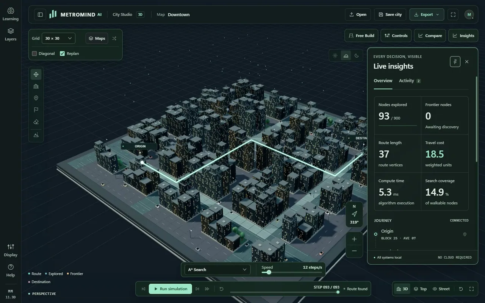

3D City Studio
metromind-3d.htmlExplore and edit procedural city grids in 3D. Draw roads, buildings, and elevation in Free Build mode, orbit camera angles, and inspect route insights across lighting conditions.
- Procedural downtown, Manhattan, maze, and terrain presets
- Free Build mode with elevation and slope resistance
- Dynamic D* Lite replanning on obstacle changes
- 3D Q-Learning height column overlays
- Day, dusk, and night city lighting modes